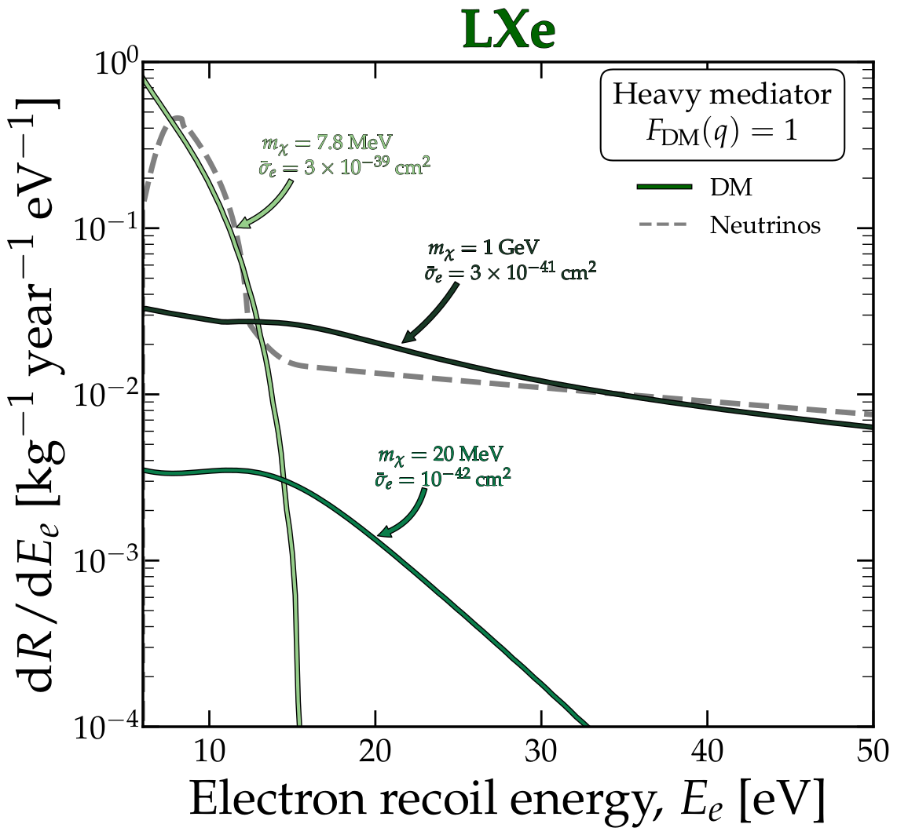
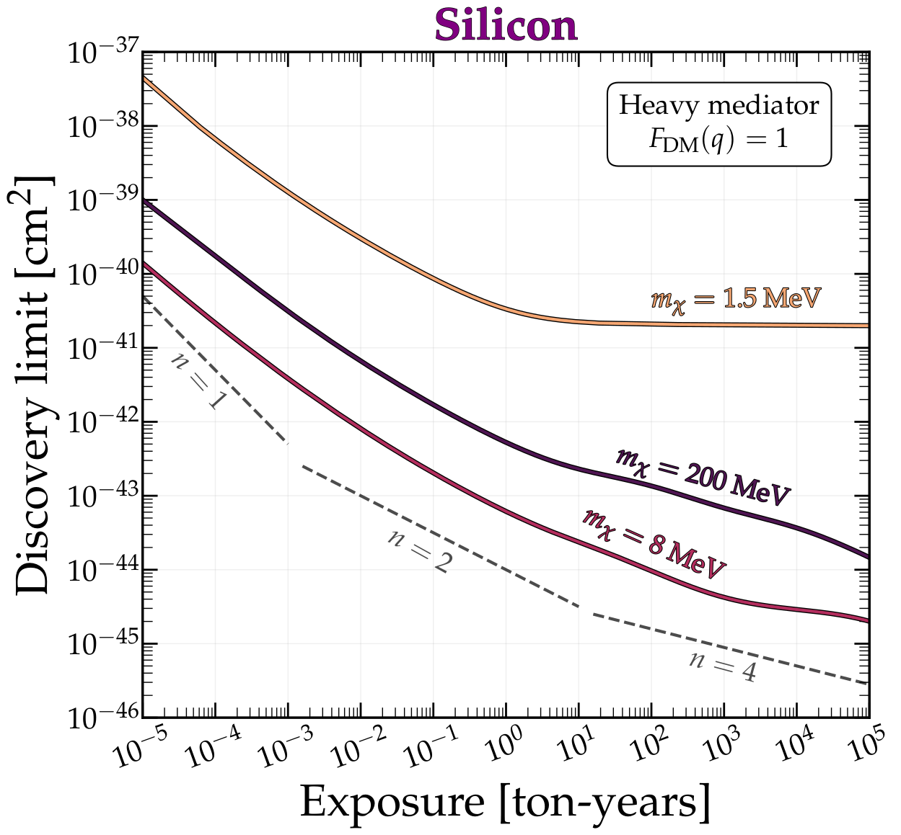

Event Reconstruction for Hyper-Kamiokande

Ben Carew - EDPIF Interview - 3/6/25
Research Experience
-
Honour's Thesis: Atomic Ionisation with Electron Interactions of Dark
Matter
- University of Queensland, Australia, July 2021 - July 2022
- Postgraduate Research Assistant: The Neutrino Fog for Dark Matter Electron Scattering Experiments
- University of Sydney, Australia, November 2022 - August 2023
- Master's Thesis: Event Reconstruction for the Hyper-Kamiokande Neutrino Detector
- LPNHE, France, March 2025 - September 2025
Light WIMP Detection and the Neutrino Fog
Supervisors: Dr Benjamin Roberts and Dr Ciaran O'Hare
The Problem with Direct Detection
- Future experiments will face an irreducible neutrino background
- Cannot be overcome with improved shielding, purification or design
- Evidence of neutrino nuclear recoils has already been detected
Electron recoil signals

DM $\leftrightarrow$ Nucleus
- $m_\chi \gtrsim 1$ GeV
- Main focus of most current detectors
- Limits down to $\sigma \sim 10^{-46}$

DM $\leftrightarrow$ Electrons
- $m_\chi \lesssim 1$ GeV
- Few experiments capable of measuring
- Limits are much weaker
Solids, Liquids and Gasses


Solar neutrino rates
- $pp$ has largest flux, dominates $\nu$-$e$ signal.
- $hep$ and $^8B$ have highest energy, dominates $\nu$-nucleus signal.
Atomic Form Factor
Atomic Form Factor
- Electron wavefunctions must be calculated relativistically
- Cannot approximate final state electron as a plane wave
- Requires accurate atomic physics methods
Event Rates
Dark Matter Event Rates
Quantifying the Fog
Quantifying the Fog
\[\textcolor{blue}{\sigma} \propto \textcolor{orange}{N}^{-1/\textcolor{green}{n}}\]i.e. How does the discovery limit decrease with the exposure?
\(\sigma=\) the discovery limit
\(N=\) the number of background events
\(\textcolor{green}{n}=2 \Rightarrow\) Poissonian background subtraction
If you're driving your car and you run into some fog, what do you do?
Do you stop, turn around and drive home?
No!
You apply for funding for brighter spotlights and you keep driving.


Electron Recoil Neutrino Fogs
Silicon
Xenon
Neon
Silicon
Liquid Xenon
Neon Gas
Neutrino Fog for Nuclear Recoils

Summary

Results published in PhysRevD.109.083016
Solutions
Event Reconstruction of the Hyper-Kamiokande Detector


Supervisors: Dr Vladimir Gligorov and Dr Mathieu Guigue
Hyper-Kamiokande

- Next-generation neutrino detector
- Water Cherenkov - collects radiation from super-luminal particles
- 20,000 photomultiplier tubes with charge and time data
- Need to reconstruct physical events from the PMT data
Motivation

- Charge-Parity Violation explains matter-antimatter asymmetry in the universe
- HyperK will have world-leading sensitivity to CPV in neutrinos
- Fast reconstruction directly reduces systematic errors for this analysis
Unitarity

Motivation
- Event reconstruction needs to be efficient and robust
- Unexpected deviations from simulated data and backgrounds
- Malfunctions and unpredictable detector behaviour
- Faster reconstruction \(\rightarrow\) larger MC sample \(\rightarrow\) greater
discovery
potential
- Focus on CPV analysis, but will benefit HyperK's broad physics goals
- Crucial to optimise reconstruction before calibration in July 2027

Scattered Light Table

~ 35% of total runtime
Approach 1: Gradient Threshold

Approach 1: Gradient Threshold


Approach 2: Parametrisation

- Regions of the scattering table can be well-fit by analytical functions
- Use physically-motivated relationships between dimensions to reduce interpolation complexity
Approach 2: Parametrisation

Approach 2: Parametrisation

Approach 2: Parametrisation

Doctoral Thesis Project:
Hyper-Kamiokande Event Reconstruction and Phenomenological Analysis
Supervisor: Dr Vladimir Gligorov
Project Goals

- Optimise reconstruction with machine learning before calibration phase
- Construction shifts, installation and qualification of timing system
- Generate simulation samples and procedure for data validation
- Phenomenological studies preparing for CPV data analysis
Summary
- Hyper-Kamiokande needs physicists who can solve computational problems in experiment and phenomenology, in which I am experienced
- Reconstruction optimisation is time-sensitive - must be completed before calibration in 2027 and will determine HyperK's discovery potential

- Fast reconstruction is the key to ensure rapid confirmation of CPV in neutrinos, a huge step in our understanding of the universe on a microscopic scale
Summary
-
Honour's Thesis: Atomic Ionisation with Electron Interactions of Dark
Matter
- Computational improvements for atomic ionisation factor
- Postgraduate Research Assistant: The Neutrino Fog for Dark Matter Electron Scattering Experiments
- Calculation of neutrino fog for electron-interacting dark matter
- Master's Thesis: Optimising HyperK Event Reconstruction
- Physics-motivated optimisations to scattered light computation
- Doctoral Thesis? Event Reconstruction and Phenomenological Analysis of HyperK
- Improve reconstruction efficiency, robustness, and CPV discovery potential